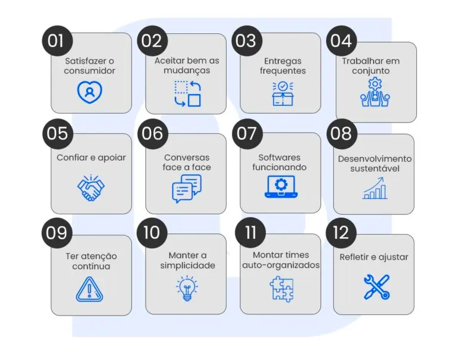

Conceito do Manifesto Ágil
As metodologias ágeis são uma forma de acelerar entregas de um determinado projeto.
Ela consiste no fracionamento de entregas para o cliente final em ciclos menores.
Com isso, eventuais problemas podem ser corrigidos mais rapidamente e os planejamentos serem revistos.
Apesar de sua aplicação ter iniciado e ser muito comum em equipes de desenvolvimento,
a estratégia pode ser utilizada em qualquer tipo de projeto
Valores dos métodos ágeis

Princípios dos Métodos Ágeis

Principais Metodologias Ágeis
A metodologia Scrum é uma abordagem ágil para gerenciamento de projetos,
especialmente popular no desenvolvimento de software. Ela se baseia em ciclos de trabalho curtos e iterativos,
conhecidos como sprints, que geralmente duram de 2 a 4 semanas. Aqui estão os principais pontos da metodologia Scrum:
Papéis
Product Owner: Define e prioriza o que precisa ser feito.
Scrum Master: Facilita o processo e resolve problemas.
Equipe de Desenvolvimento: Trabalha para entregar o que foi planejado.
Artefatos
Product Backlog: Lista de tudo que precisa ser feito no projeto.
Sprint Backlog: O que será feito em um sprint específico.
Incremento: O produto finalizado ao final de cada sprint.
Eventos
Sprint: Ciclo de trabalho.
Sprint Planning: Planejamento do sprint.
Daily Scrum: Reunião diária rápida.
Sprint Review: Revisão do que foi feito.
Sprint Retrospective: Reflexão sobre o processo.
Extreme Programming (XP) é uma abordagem ágil para desenvolver software que se foca em melhorar
a qualidade e a flexibilidade do trabalho. Em vez de seguir um plano rígido, o XP promove um desenvolvimento
mais adaptável e colaborativo. Aqui estão alguns pontos principais sobre como o XP funciona:
Desenvolvimento em iterações rápidas (1 a 2 semanas) para entregas frequentes e feedback constante.
Histórias de Usuário: Requisitos descritos de forma simples e ajustados continuamente.
Programação em Par: Dois desenvolvedores trabalham juntos para melhorar a qualidade do código.
Desenvolvimento Guiado por Testes (TDD): Criar testes antes do código para garantir funcionalidade.
Refatoração Contínua: Melhorar o código constantemente para manter a simplicidade e a qualidade.
Design Simples: Construir o que é necessário e adaptar conforme as necessidades surgem.
A metodologia Lean é uma abordagem para otimizar processos e criar valor de forma eficiente,
minimizando desperdícios e melhorando continuamente. Originalmente desenvolvida na indústria manufatureira,
a metodologia Lean é agora amplamente aplicada em diversos setores, incluindo software e serviços.
Valor: Definir valor do ponto de vista do cliente e focar em entregar o máximo possível.
Fluxo de Valor: Identificar e eliminar etapas no processo que não agregam valor.
Fluxo Contínuo: Manter o trabalho fluindo sem interrupções e minimizar gargalos.
Produção Puxada: Produzir com base na demanda real, não em previsões.
Melhoria Contínua: Buscar constantemente maneiras de melhorar e eliminar desperdícios.
O que é Design Thinking?
Design Thinking é um método que combina empatia com uma abordagem prática e criativa para
resolver problemas complexos. Ele se concentra em entender as necessidades e desejos dos usuários,
explorar várias soluções possíveis e iterar rapidamente para encontrar a melhor solução.
Empatizar: Entender as necessidades e desafios dos usuários através de pesquisa e observação.
Definir: Resumir o problema com base nas informações obtidas.
Idear: Gerar várias ideias e soluções criativas.
Prototipar: Criar versões simples das soluções para visualizar e testar
Testar: Obter feedback dos usuários e ajustar as soluções conforme necessário.
Onde Utilizar Design Thinking
Desenvolvimento de Produtos, Desenvolvimento de Serviços, Soluções de Negócios, Educação e Ensino, Saúde e Bem-Estar